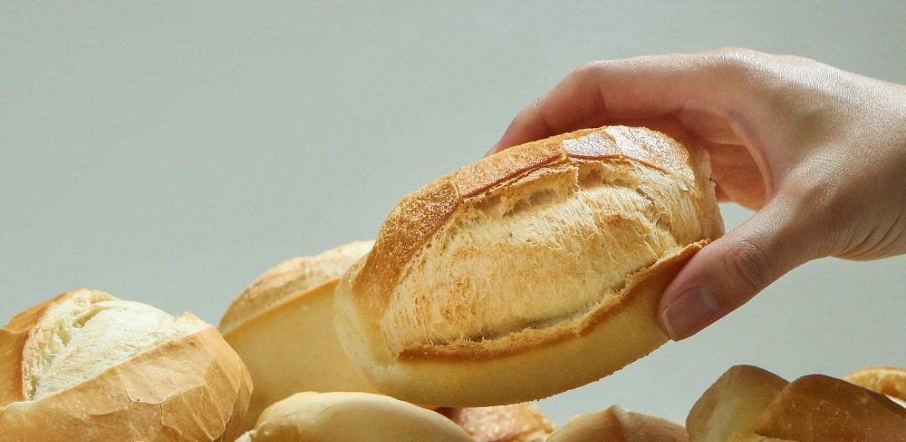

Pão com ovo: a receita básica que faz o seu perfil vender
Antes de investir em anúncio caro ou na ferramenta da moda, o seu perfil precisa do básico. Cinco ingredientes simples que fazem o Instagram do seu negócio vender.
Pense num pão com ovo. É simples, barato e tem quase tudo o que você precisa para começar o dia: carboidrato, proteína e energia. Não tem segredo, não tem embalagem bonita, e funciona.
O marketing do seu negócio também tem o seu pão com ovo. E, como na alimentação, muita gente pula o básico para correr atrás do que parece mais sofisticado.
O whey do marketing
Muita gente gasta com whey e suplemento caro, mas não toma um café da manhã decente todo dia. No marketing é igual: tem empresa investindo em anúncio caro, assinando a ferramenta da moda, correndo atrás da próxima trend… e o perfil está largado.
Último post de três semanas atrás, comentário sem resposta, link da bio que não abre. Nenhum anúncio compensa um perfil assim, porque o cliente que chega pelo anúncio encontra uma vitrine fechada.
Então anota a receita
São cinco ingredientes para gerar engajamento no seu perfil e fazer o seu negócio vender. Nenhum deles é caro. Todos dependem de cuidado e de constância.
1. Uma dúzia de posts por mês
Três posts por semana, toda semana, sem pular nenhuma. Parece muito, mas você já tem conteúdo: é o dia a dia do seu negócio. O produto saindo, o cliente satisfeito, a novidade da semana, a resposta para uma dúvida que todo mundo faz. Só falta organizar.
2. Resposta no ponto
Comentário e mensagem precisam de resposta enquanto o cliente ainda está com fome. Quem pergunta "qual o valor?" está pronto para comprar agora. Se a resposta chega no dia seguinte, a fome passou, ou foi resolvida no concorrente.
3. Fogo ligado 24 horas
As respostas automáticas da Meta trabalham até quando você está dormindo: mensagem de boas-vindas, perguntas frequentes com botões prontos e aviso fora do horário. Elas já estão lá, de graça, no Instagram e no Facebook do seu negócio. Na maioria dos perfis que eu analiso, ninguém configurou.
4. Pão bem apresentado
É a primeira impressão. Bio clara dizendo o que você vende e onde, link do WhatsApp que funciona e destaques com cardápio, preços e como pedir. Quem chega no seu perfil precisa entender em cinco segundos o que você oferece e como comprar.

5. Mesa posta
Site no ar e link que abre. Parece óbvio, mas é um dos erros mais comuns: o cardápio desatualizado, a página fora do ar, o link quebrado na bio. Cliente que cai numa página de erro não volta.
Por que o básico vem antes de tudo
Nenhuma trend, nenhum anúncio e nenhuma ferramenta nova dá resultado se o básico não estiver sendo feito. Constância, resposta rápida, automação, perfil organizado e site no ar vêm antes de qualquer estratégia mirabolante. É o pão com ovo antes do whey.
E o melhor: o básico bem feito é barato, é sustentável e acumula resultado mês após mês.
Não quer ir pra cozinha?
Se você não tem tempo para cuidar de cada ingrediente, a gente prepara pra você. É exatamente isso que o Marketing Essencial faz: o básico bem feito, toda semana, com posts no padrão da sua marca, atendimento organizado e acompanhamento dos números.
O primeiro passo é o diagnóstico gratuito: eu olho o seu Instagram, o seu Facebook e o seu site como um cliente olharia e mostro quais ingredientes estão faltando.
Marketing Essencial: o pão com ovo do seu negócio. O básico bem feito funciona.
Vitor Campos · filmmaker, formado em marketing e gestor do Marketing Essencial